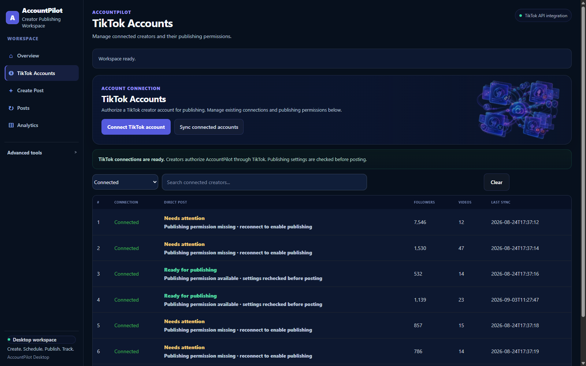

One workspace from TikTok connection to publishing status.
AccountPilot combines TikTok account connection, Create Post, scheduled Direct Post, Posts and Analytics in the same desktop workspace.
AccountPilot Desktop must already be running on this computer at 127.0.0.1:8000.



Designed around the publishing job lifecycle.
Authorized creator accounts
Connect supported TikTok accounts and refresh account information through the TikTok API integration after creator authorization.
Video and post preparation
Select the final local video, choose the destination creator, prepare an editable caption and select a representative cover frame.
Explicit publishing choices
Visibility has no default. Privacy and supported interaction choices follow the selected creator's current TikTok publishing settings.
Persistent date, time and timezone
Choose Schedule in the publishing rail, set date, time and timezone, and AccountPilot revalidates TikTok settings before sending automatically at execution time.
Direct Post through TikTok Content Posting API
Creator-selected local media is submitted through the configured Direct Post workflow using FILE_UPLOAD as the media-transfer method.
Posts & Analytics
Posts preserves processing, published and attention-needed states, while Analytics remains available for one connected creator at a time.
Caption assistance remains editable.
AccountPilot may offer optional caption drafting assistance. Suggested text remains a draft and does not itself approve, schedule or publish a post.